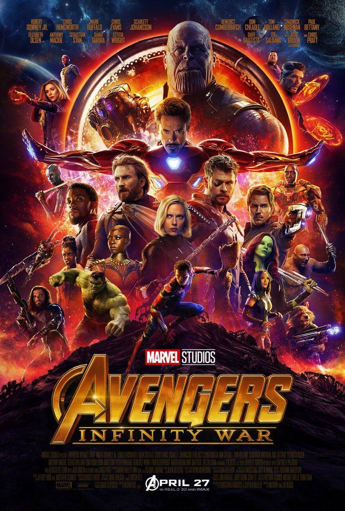
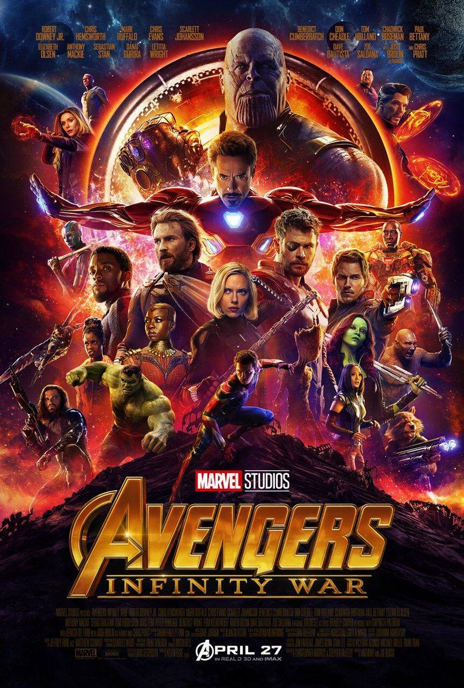

Título: Guardiões da Galáxia Ano de Lançamento: 2014 Gênero: Ação, Aventura, Ficção-Científica Formato: MKV Qualidade: BluRay 720p, 1080p Áudio: Português, Inglês Legenda: Português Tamanho: 1.8 GB | 2.4 GB Qualidade de Áudio: 10 Qualidade de Vídeo: 10 Duração: 2h 01min Servidor: Torrent
SINOPSE:Peter Quill (Chris Pratt) foi abduzido da Terra quando ainda era criança. Adulto, fez carreira como saqueador e ganhou o nome de Senhor das Estrelas. Quando rouba uma esfera, na qual o poderoso vilão Ronan, da raça kree, está interessado, passa a ser procurado por vários caçadores de recompensas. Para escapar do perigo, Quill une forças com quatro personagens fora do sistema: Groot, uma árvore humanóide (Vin Diesel), a sombria e perigosa Gamora (Zoe Saldana), o guaxinim rápido no gatilho Rocket Racoon (Bradley Cooper) e o vingativo Drax, o Destruidor (Dave Bautista). Mas o Senhor das Estrelas descobre que a esfera roubada possui um poder capaz de mudar os rumos do universo, e logo o grupo deverá proteger o objeto para salvar o futuro da galáxia.


 



 Guardiões da Galáxia
Guardiões da Galáxia